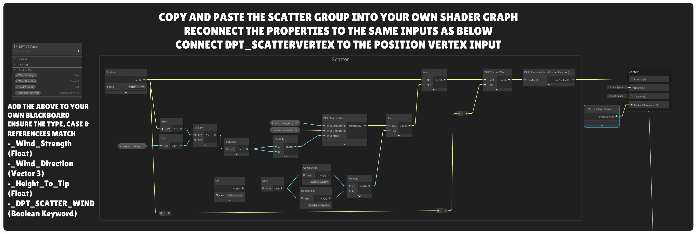

3D Scatter Guide
Scatter grass, flowers, mushrooms, pebbles, custom meshes and particle effects from reusable definitions that can target several Terrain Atlas biomes.
On a small screen, scroll wide tables sideways to read every column.
The 3D Scatter system places instanced meshes and particle emission points directly from Terrain Atlas biome data. A scatter object contains one reusable set of placement rules, with mesh variants, a particle effect, or both. Instead of rebuilding the same grass setup for every biome, add several Target Biomes to that one object and optionally give each target its own density multiplier.
Scatter is intended for repeated surface detail such as grass, flowers, mushrooms, stones and small props. It does not edit the terrain mesh, create colliders for every instance or turn scattered objects into individual GameObjects.
Understand the scatter library
Scatter authoring is global to the Terrain Atlas biome library rather than stored separately inside every biome inspector. Open the 3D Scatter section in the Vertex 3D Terrain window to create and edit the library.
| Part | Its job | Important consequence |
|---|---|---|
| Scatter Object | Stores reusable placement rules, mesh variants, a particle effect and the mesh wind/player interaction choices. | Configure grass once, then target several biomes instead of duplicating the whole setup. |
| Target Biome | Allows that scatter object to spawn where a selected Terrain Atlas biome contributes. | Each target can have its own Density Multiplier from 0 to 2. |
| Scatter Output | Chooses Meshes, Particles or Both. | Use the same biome and placement rules for visible meshes and particle emission points. |
| Mesh Variant | Chooses a built-in preset or custom mesh and its relative selection chance. | Several variants can share the same placement rules. |
| Scatter Settings | Controls seed, batching, distance, LOD transition, far density and safety budgets. | These are shared by the scatter library rather than repeated on every object. |
| Active Terrain Renderer | Connects the profile to the selected terrain root and submits GPU-instanced draws. | Instances are not represented by thousands of scene GameObjects. |
Create your first scatter object
- Use the Terrain Atlas pipeline and make sure the terrain has painted biome data.
- Open 3D Scatter in the Vertex 3D Terrain window. If no profile exists, create the Scatter Library.
- Choose + Add Scatter Object and give it a clear name such as Meadow Grass.
- Under Target Biomes, choose one or more biomes from the current library.
- Start with Density Multiplier 1 on each target.
- Set the overall Density (clumps per square metre), Spacing, Coverage range, slope, scale and surface alignment.
- Keep Scatter Output on Meshes for this grass setup. Add a Mesh Variant, using the built-in Grass preset or a Custom Mesh. For particles, follow the particle setup below.
- Assign or confirm the material, enable GPU Instancing if prompted and use Rebuild Scatter after major changes if the preview has not already refreshed.
Example: create one Meadow Grass object, then target Lush Grass at ×1.0, Dry Meadow at ×0.65 and Forest Soil at ×0.25. The same grass mesh, colour ramp, roughness and wind setup is reused on all three surfaces.
Target several biomes from one setup
A scatter object can target any number of Terrain Atlas biomes. The biome picker shows the current biome name and numeric ID. Use + Add Target Biome to extend the list.
| Control | Meaning | Example |
|---|---|---|
| Biome | The Terrain Atlas biome on which this scatter object is allowed to appear. | Grassland, Forest Soil or another current library entry. |
| Density Multiplier: 0–2 | Multiplies the scatter object’s base density only for this target biome. | 1 uses normal density, 0.5 gives half as much, 0 disables that target, 2 allows twice as much. |
At a painted blend, the system evaluates the combined contribution of the scatter object’s targeted biomes. A reusable object can therefore continue across a Grass/Forest boundary instead of requiring separate duplicate definitions.
Accepted instances retain an owning biome based on the contributing target at their position. This is what allows a single reusable grass object to react differently when a live biome modifier affects only one of its target biomes.
Placement controls
Find Scatter Output: in the Vertex 3D Terrain window, expand 3D Scatter, then open a Scatter Object by clicking its name or arrow. Its Scatter Output dropdown is directly below Target Biomes and above Placement. Choose Meshes, Particles or Both there.
In the Placement controls, Player Interaction sits beside Static Scatter. Enable it to show Bend Distance below the buttons.
| Control | Meaning | Useful approach |
|---|---|---|
| Scatter Output | Meshes draws the configured variants; Particles creates emission points without requiring mesh variants; Both combines the two. | Existing scatter objects default to Meshes. Both uses the mesh variants to establish its placements. |
| Player Interaction / Bend Distance | Lets compatible scatter meshes bend away from nearby Scatter Interactors. Bend Distance limits the tip displacement in world metres. | Enable for grass or flexible plants. See the Player Collision & Interaction Guide. Particle-only output does not expose these mesh controls. |
| Density: 0–100 clumps/m² | Base expected instance density before Target Biome multipliers and live runtime density are applied. | Start low, then increase while checking instance count and distant coverage. |
| Coverage Min / Max: 0–1 | Allows placement only where combined coverage of all Target Biomes falls within the selected range. | Raise Min to reject faint blends. Lower Max below 1 to reject solid biome interiors. Max 1 preserves the usual interior placement. |
| Spacing | Minimum world-space distance between clump centres for this scatter object, including across terrain tile boundaries. 0 leaves spacing unrestricted. | Increase to reduce clumping and overlap. This can reduce the final instance count below Density. It measures centres, so large meshes can still overlap. |
| Max Slope: 0–90° | Rejects surfaces steeper than the chosen slope. | Grass often wants a lower limit than rocks or cliff debris. |
| Scale Min / Max | Random uniform scale range for accepted instances. | Use a restrained range for natural variation without obvious size jumps. |
| Alignment: 0–1 | Blends between the selected Up Mode and the terrain normal. | 0 keeps objects upright relative to the chosen up direction; 1 follows the surface normal fully. |
| Offset | Moves the instance along the sampled surface normal. | Use a small positive or negative adjustment when a mesh appears to float or sink. |
| Enable Wind | Opts this scatter object into DPT Scatter Wind. The control is only available when the assigned shader supports the DPT Scatter Wind feature. | Enable for compatible grass, flowers and other flexible meshes. Leave off for rigid props. VCCORE materials use their own authored wind data and do not need this option. |
Place reeds only along a shoreline
- Create a Reeds scatter object and target Water only.
- Use a Coverage range such as 0.15–0.65 to allow reeds where Water blends into Mud, while excluding pure Water at 1.
- Adjust the painted transition width and range to position the band, then set Density and Spacing for the number and separation you want.
Coverage sums all targeted biomes. If you target both Water and Mud, their combined coverage can be 1 throughout that transition, so the same range will exclude it. Target only the biome whose partial coverage describes the edge you need. Coverage filters eligible surface; the per-biome Density Multiplier changes how many clumps appear there.
Built-in presets and custom meshes
Each scatter object can contain several Mesh Variants. Relative Chance is a relative selection weight, not a percentage that must add to 100. Use different Shape Seed values for variations of a built-in mesh without changing the placement seed. Preset descriptions are available as tooltips.
| Built-in preset | Useful for | Shape notes |
|---|---|---|
| Grass / Short Grass / Tall Grass | Meadows, close ground cover and taller vegetation. | Choose the silhouette for your scene; near and far geometry keep distant populations cheaper. |
| Flowers | Small flowering patches. | Mix seeds and ramps for variation. |
| Lavender | Upright purple flower spikes. | Clustered flower geometry and few leaves keep the mesh simpler than many separate florets. |
| Ferns / Clover / Shrubs | Leafy undergrowth and low bushes. | Use scale and spacing to keep overlapping foliage under control. |
| Reeds | Wetland and shoreline planting. | Smaller default stalks; combine with a coverage band and spacing. |
| Pebbles | Small stone clusters. | Use Smoothing Angle to choose smoother or faceted lighting. |
| Mushrooms | Forest-floor detail. | The colour ramp follows each generated element’s local height. |
| Crystals | Faceted mineral clusters. | Smoothing Angle defaults to 0 for crisp faces and remains adjustable. |
| Fallen Branches | Ground debris. | Simplified attached twigs and a ground-oriented shape. Check alignment and offset on steep ground. |
Shading and surface properties
All built-in presets, including Crystals, have Smoothing Angle: 0–180°. At 0 the faces stay flat; at 180 all adjoining faces can blend their normals. Intermediate values smooth gentle joins while keeping sharper edges. This changes lighting, not the mesh silhouette or terrain’s global Smooth / Sharp setting.
The Vertex Colour Ramp is evaluated from bottom to top locally for each generated element. Smoothness runs from rough at 0 to polished at 1 and defaults to 0.2 for new variants. Metallic controls their metallic response from 0 to 1.
Generated meshes pack Metallic into UV3.R. UV3.G contains the DPT packed scale/roughness value derived from Smoothness, rather than raw smoothness. A custom shader must decode this DPT mesh data to use it correctly.
Emissive scatter
Enable Emissive on a built-in variant, then use HDR colours in its ramp for brightness and ramp alpha for glow coverage. DPT packs that coverage into vertex alpha in the same way as emissive biomes. HDR colour alone does not enable emission. The material’s emission controls still apply; visible bloom depends on the scene’s post-processing, and emission does not create a light source.
Custom meshes
Choose Custom Mesh, assign a 3D Mesh, optional submesh index, Material and optional Distant Mesh. With no Distant Mesh, the near mesh is reused. Custom meshes retain their authored normals, vertex colours and UV3 surface data; the built-in shading, metallic, smoothness and emissive controls do not rewrite them. Enabling supported DPT Scatter Wind prepares a runtime copy with wind/biome data and leaves the source asset unchanged.
Material choice matters. Scatter uses GPU instancing. Use a material compatible with the mesh data and enable GPU Instancing when prompted. Leaving the variant material empty resolves the source terrain material where appropriate.
Emit particles from scatter placements
Where to find the dropdowns: open 3D Scatter in the Vertex 3D Terrain window, expand the Scatter Object, set Scatter Output to Particles or Both, then expand Particle Effect. Particle Preset and Emission Trigger are its first controls. Choose Custom to show the Particle Prefab field.
Preview Particles, Follow Live Biome and Follow Flow Speed use highlight buttons in their respective particle inspectors. Blue means enabled; click again to disable.
Use a scatter object for pollen, floating spores, embers or another repeated particle effect. It uses the same Target Biomes, Density, Coverage, Spacing, slope and placement settings as mesh scatter.
What starts the particles, and where do they come from?
Choose Emission Trigger inside Particle Effect. Continuous emits automatically from eligible placements within camera range at Rate / Emitter. Player Movement emits only where a moving Scatter Interactor passes close enough to the placement, using its radius, strength and height tolerance. Standing still or moving below Minimum Movement Speed stops new emissions. Choose Particles or Both and assign a Particle Preset to enable output. The Preview Particles highlight button enables the effect while editing; wind alone does not trigger Player Movement emission.
- Both: mesh placements in this Scatter Object also provide particle emission points. Emitter Fraction selects the fraction of those placements that can emit, and Emission Offset positions the effect relative to each selected placement. All mesh variants in that object share these particle settings.
- Particles: the object creates its own emission placements using its biome and placement rules, without mesh variants.
- Other Scatter Objects: each object has its own output and particle settings. Creating a separate pollen Scatter Object in the same profile generates its own points; it does not attach pollen to grass or flowers in another object. To emit from your existing grass placements, choose Both on that grass object.
Example: with 100 nearby grass placements, Emitter Fraction 0.1 selects roughly 10 emission points. At Rate / Emitter 1, that gives roughly 10 emission events per second before live biome multipliers and emitter/particle limits. A prefab with both droplets and mist can produce more than one particle per event.
- Create a scatter object and choose its Target Biomes.
- Open that Scatter Object’s controls. Find the Scatter Output dropdown below Target Biomes and above Placement. Choose Particles for an effect without meshes, or Both to retain mesh variants as well.
- Expand Particle Effect. Choose a type from the Particle Preset dropdown, such as Pollen, Grass Flecks or Water Splash. Choose Custom to show Particle Prefab and assign your own effect.
- Start with a low Emitter Fraction and Rate / Emitter, then adjust the offset and rotation.
- Enable Preview Particles to see the effect in the Scene view. This editing preview is off by default; runtime emission does not require it.
- Set the distance and emitter/particle limits, then inspect the effect from your game camera.
| Control | Meaning | Starting point |
|---|---|---|
| Particle Preset / Particle Prefab | Supplies the particle shape, colour, lifetime, speed, gravity, noise and other motion modules. | Particle Preset generates a built-in effect from code, including its material and mathematical particle shape. No prefab or sprite assignment is needed. Custom shows Particle Prefab for your own effect. Water Splash emits droplets; Mist is separate; Waterfall Splash combines droplets and mist. |
| Emission Trigger | Continuous emits ambient particles. Player Movement requires a moving Scatter Interactor within range of the placement. | Existing effects default to Continuous. With Both, also enable Player Interaction, use a supported material and set Bend Distance above zero. |
| Minimum Movement Speed | Movement threshold in metres per second. Appears for Player Movement. | Default 0.1. Increase to ignore small motion. Teleports beyond the interactor’s Maximum Movement Step do not emit. |
| Emitter Fraction: 0–1 | Fraction of scatter placements eligible to emit. The selection remains stable during ordinary live biome changes. | Default 0.1. Use 0 to select no emission points. |
| Rate / Emitter | Emissions per second at each selected nearby placement, before live biome multipliers. | Default 1. Increasing the number of emitters increases the total emission rate. |
| Emission Offset | Local offset from each placement, including its scale. | Default (0, 0.5, 0). Raise it to put pollen above the plant or lower it toward the ground. |
| Emission Rotation | Local rotation of the effect in degrees. | Default (−90, 0, 0) points a forward-facing particle shape upward. |
| Particle Distance | Maximum camera distance for new emissions, also limited by the profile’s Maximum Distance. | Default 40 metres. Existing particles finish their lifetimes after emissions stop. |
| Emitter Limit: 1–1024 | Maximum nearby emission points used by this scatter group at once. | Default 128. Dense terrain uses a bounded sample of its placements. |
| Particle Limit | Maximum living particles across the group’s effect, shared between its child systems. | Default 1000. Start lower for large or overlapping transparent particles. |
| Preview Particles | Animates the effect in the Scene view. | Enable while editing; turn off when the preview is unnecessary. |
Choose a particle preset
The Particle Preset dropdown is shared by scatter, player surface effects and the waterfall emitter. It selects the appearance; Emission Trigger or the component determines when it emits. A preset does not choose a biome for you. All nine built-in choices are procedural: their motion, colour and lifetime are configured in code, and a URP shader draws the particle shape mathematically without an imported sprite. Custom remains available for an authored ParticleSystem prefab.
| Preset | Effect | Example |
|---|---|---|
| Pollen | Small yellow drifting particles. | Ambient meadow pollen or pollen disturbed by a player. |
| Grass Flecks | Small green elongated fragments with upward motion and gravity. | Running through grass. |
| Water Splash | Short upward droplets with gravity. | Player movement over a water biome. |
| Mist | Soft pale particles with slow drifting motion. | Water vapour or a soft waterfall plume. |
| Rock Dust / Sand Dust | Soft grey-brown or sandy dust. | Movement over rock or dry ground. |
| Snow Puffs | Small pale particles with gentle gravity. | Movement over a snow or ice dusting biome. |
| Embers | Small orange drifting particles. | A hot or scorched biome. |
| Waterfall Splash | Droplets plus a mist child system. | The supplied waterfall impact effect. |
| Custom | Shows Particle Prefab for an authored ParticleSystem prefab. | Your own leaves, sparks, droplets or other response. |
Release particles when players disturb scatter
- Open the grass Scatter Object and set Scatter Output to Both.
- Enable the Player Interaction button beside Static Scatter and set Bend Distance above zero. Use a compatible material.
- Expand Particle Effect. Choose Grass Flecks or Pollen from Particle Preset and set Emission Trigger to Player Movement.
- Start with Emitter Fraction 0.2, Rate / Emitter 15 and Minimum Movement Speed 0.1. Tune Emission Offset for the plant height and cap the Particle Limit.
- Add DPT_ScatterInteractor to the player near its feet, then run through the grass in Play mode. Standing still stops new emissions; existing particles finish their lifetimes.
The test uses the moving interactor’s contact area at scatter roots rather than reading shader-deformed vertices. It sweeps between movement samples to catch fast passes, respects the height band and ignores teleports beyond Maximum Movement Step. Particle-only output can use the same trigger without enabling mesh bending. Live biome strength and density still scale the emission rate; Static Scatter retains its usual independence from those modifiers.
For splashes or dust underfoot without scatter meshes, use Player Surface Effects and baked biome data.
Live biome response and natural fading
Live biome strength and Scatter Density multiply the rate of new emissions for placements owned by the targeted biome IDs. Reducing either value produces fewer new particles; at zero, new emissions stop and living particles finish naturally. Static Scatter keeps particle emission independent of these live modifiers.
Particle lifetime provides this gradual disappearance. The mesh Live Crossfade toggle does not control particle transparency. Particle colour comes from the chosen procedural preset or Custom prefab; the live Scatter Colour Multiplier is a mesh tint and does not recolour the particle effect.
Meadow pollen: choose Both on a grass group, choose the Pollen preset, and start with Emitter Fraction 0.1, Rate / Emitter 1, Particle Distance 25 and Particle Limit 300. Animate the grass biome’s live density toward 0 for winter: fewer particles are emitted while the existing pollen drifts away.
Procedural presets, custom prefabs and budgets
One shared generated effect, or one Custom prefab instance, serves each active scatter group; there is no particle GameObject at every grass clump. The emitter uses world-space simulation and controls emission manually, so prefab automatic rates and bursts are disabled. Each regular child system emits once per emission event, allowing a compound effect such as droplets plus mist. Particle Limit is divided across the child systems.
Built-in presets create their particle systems and materials only when an active effect is needed. Generated objects and materials are released when the effect is replaced or disabled. They still use Unity ParticleSystems; procedural creation does not by itself guarantee higher frame rates. Use a material suitable for your render pipeline when assigning a Custom prefab.
Emission points follow placement transforms and terrain movement. Existing particles stay in world space. Shader wind and player bending do not move these emission anchors; tune Emission Offset for the plant’s resting position. Changing the preset or Custom prefab, switching to Meshes or disabling the renderer releases its generated effect immediately.
Waterfall splash and mist
Use DPT_WaterfallSplashEmitter for a manually placed impact strip at the bottom of a waterfall. It emits a shared particle effect across the strip rather than requiring a scatter profile or a GameObject at every impact point.
The enabled component emits continuously during Play mode at Emission Rate while within camera range. It does not wait for water or a player to collide with it. Enable Preview Particles for editing; optional live biome and flow links can reduce or stop new emissions.
- Create a GameObject at the waterfall’s base and add DPT_WaterfallSplashEmitter through Add Component.
- Use the default procedural Waterfall Splash selection, choose another Particle Preset, or choose Custom to show Particle Prefab and assign your own effect.
- Adjust Splash Width and Splash Depth to cover the impact. The selected-object gizmo shows the strip.
- Leave Spray Direction at (0, 1, 0) for an upward spray, then tune Emission Rate and Particle Limit.
- Enable Preview Particles to see it while editing.
- Optionally link it to the water biome and flow speed as described below.
| Control | Meaning | Default / use |
|---|---|---|
| Splash Width / Splash Depth | Size of the impact strip along the object’s local X and Z axes. | 3 / 0.5. Position and rotate the object to fit the waterfall base. |
| Spray Direction | Direction in the object’s local axes. | (0, 1, 0) sprays upward. It is independent of the material’s texture heading. |
| Emission Rate | Emissions per second across the whole strip. | 40. Waterfall Splash and compound Custom prefabs can emit from several child systems per event. |
| Particle Distance / Particle Limit | Camera distance for new emission and the total living-particle budget across child systems. | 60 metres / 1000 particles. |
| Follow Live Biome | Scales emission with the linked biome’s live strength and Scatter Density. | Assign Terrain Material and Biome ID. Turning the live response down stops new particles and lets older particles finish. |
| Follow Flow Speed | With a live-biome link, additionally scales emission by the absolute flow speed relative to Full Emission Speed. | Directional and Back and Forth can emit. Stopped flow, no matching active flow, and Lake mode stop new splash emissions. |
| Full Emission Speed | Absolute texture-flow speed that gives the full configured emission rate. | 0.15. This is a shader animation value, not a physical falling-water speed. |
Place the impact effect yourself. The component does not detect waterfall bottoms or calculate impact forces. Waterfall Projection animates the water surface; this component supplies the visible splash and mist.
A linked splash also follows Scatter Density. If the water slot has Scatter Density at 0, it emits no new particles even with flow enabled. Use an unlinked emitter when you want its rate controlled independently.
For still water, choose Lake mode on the water material. A flow-linked waterfall splash stops emitting in Lake mode; an unlinked decorative effect can continue at its own configured rate.
Grass reacting to players
Enable Player Interaction on a compatible grass or plant scatter object and add DPT_ScatterInteractor to the player. Nearby mesh tips bend away while their roots stay anchored. This works independently of wind.
The Player Collision & Interaction Guide covers setup, radius, height tolerance, bend limits, NPCs and physical collision. Use it when the player walks through grass and you want a visual response without individual grass colliders.
Distance, LOD and renderer settings
Expand Scatter Settings. Frequently used controls are grouped under Distance & LOD and Preview & Shadows. Open Advanced for Cell Size, Wind Bounds, per-tile budgets, Up Mode and Runtime Discovery. Placement settings use compact paired sliders, and scale ranges show Min/Max rather than X/Y.
| Setting | Meaning | What to watch |
|---|---|---|
| Seed | Controls deterministic scatter placement. | Change it when you want a different distribution without changing density rules. |
| Cell Size | World-space size used to group instances for culling and drawing. | Very small cells increase group count; very large cells make distance/frustum culling less precise. |
| Draw Distance | Stops submitting scatter beyond this camera distance. | Set it for the actual game camera and scale of your scene. |
| LOD Distance | Centre of the near-to-far transition. | Choose a distance where the mesh change is difficult to notice. |
| Transition | Width of the smooth stochastic transition around LOD Distance. | 0 produces an immediate change; a wider value mixes near/far populations across a band. |
| Live Crossfade | Optionally fades individual instances as live biome Strength or Scatter Density changes, in both directions. Off by default. | Enable under Distance & LOD. Requires a material with DPT scatter fade support; Static Scatter ignores live changes. |
| Fade Range: 0.01–1 | Controls the portion of the live density animation over which each instance fades. Defaults to 0.15. | Increase for softer, longer fades. Timing follows the live animation; this value is not a duration in seconds. See Live Crossfade. |
| Far Density: 0–1 | Fraction of the population retained at full far distance. | Lower it to thin distant scatter as well as switching to cheaper geometry. |
| Wind Bounds | Extra world-space culling bounds for wind-enabled scatter. | Raise it if strongly animated tips disappear while their original bounds leave the camera. |
| Instances / Tile | Safety cap for accepted instances on one terrain source. | Raise only after checking memory and performance. |
| Candidates / Tile | Safety cap for attempted placement samples. | A cap warning usually means density or terrain size deserves review before simply increasing the budget. |
Up Mode and preview
| Renderer control | Use |
|---|---|
| World Up | Ordinary terrain using global +Y as the up direction. |
| Root Up | Rotated terrain where the terrain/root transform defines up. |
| Radial | Planetoids or spherical worlds where up points away from the selected centre/reference. |
| Up Reference | Optional transform used by Root Up and Radial. The terrain root is used when no separate reference is supplied. |
| Scene Preview | Shows scatter in edit mode. |
| Cast Shadows / Receive Shadows | Controls the instanced draw’s shadows. New renderers default Cast Shadows to On; check existing renderers because their saved value is retained. Shadows can improve close-up shots but add rendering cost. |
| Animate Preview | Continuously refreshes Scene view for wind or animated materials. Disable for a static preview. |
| Runtime Discovery | Off by default. Turn on for periodic discovery during play, or call DPT_ScatterRenderer.RefreshSources() after changing nested terrain hierarchies or LOD membership. Direct child changes refresh automatically. |
Wind setup
DPT Scatter Wind has two levels of control. The material decides whether the wind feature is active in the shader, while Enable Wind on the Scatter Object decides whether that particular scatter object uses the DPT Scatter Wind path. The Scatter Object control is only available when the assigned shader declares the _DPT_SCATTER_WIND Boolean Keyword, which lets Vertex 3D Terrain recognise that the shader supports this feature.
Using the Vertex Terrain material
- Open the material’s Wind section and turn on Enable Wind.
- Set a modest Wind Strength.
- Set Height To Tip close to the object-space height of the scatter mesh so the base stays anchored and the tip can reach full movement.
- Choose the Compass Heading and Vertical Pitch.
- Back in the 3D Scatter section, turn on Enable Wind for each Scatter Object that should use DPT Scatter Wind.
- If strongly animated tips disappear near the camera or frustum boundary, increase Wind Bounds in Scatter Settings.
Rigid scatter such as pebbles can share the same material while leaving the Scatter Object’s Enable Wind option off.
VCCORE materials
VCCORE uses its own authored wind system, so the Scatter Object’s Enable Wind control is intentionally unavailable for VCCORE materials. This is expected. If wind was painted onto the model with Stylized Color Swapper & Material Optimizer, or the model came from a DPT pack with wind data already authored, no Scatter-specific wind setup is required. Use the VCCORE material’s own wind controls to enable or adjust that movement.
Add DPT Scatter Wind to your own Shader Graph
If your custom shader already has its own wind system, keep using that system. You only need the DPT setup below when you want a custom Shader Graph to use the same Scatter Wind feature as the Vertex Terrain shader.
Open SH_DPT_VCTerrain, copy the Scatter Wind block shown below and paste it into your own Shader Graph. Then add these Blackboard entries using the exact Reference names:
| Blackboard entry | Type | Reference |
|---|---|---|
| Wind Strength | Float | _Wind_Strength |
| Wind Direction | Vector 3 | _Wind_Direction |
| Height To Tip | Float | _Height_To_Tip |
| DPT Scatter Wind | Boolean Keyword | _DPT_SCATTER_WIND |
- Copy the complete Scatter Wind block from the supplied Vertex Terrain Shader Graph and paste it into your graph.
- Add the four Blackboard entries above if they do not already exist.
- Reconnect Wind Strength, Wind Direction, Height To Tip and DPT Scatter Wind exactly as shown in the reference image.
- Connect the final DPT Scatter Wind output to the graph’s Vertex Position input.
- Save the graph and assign a material that uses it to your Custom Mesh variant.
- Enable the DPT Scatter Wind keyword on that material, then enable Enable Wind on the Scatter Object.

Existing vertex animation: if your Shader Graph already modifies Vertex Position, integrate the copied Scatter Wind block with that existing object-space position instead of simply replacing your current deformation chain.
Live biome density and colour response
The same four Live Biome Modifier slots used by terrain surfaces can also control scatter belonging to their target biome IDs. This lets a seasonal system change the ground and the vegetation together.
| Scatter Response control | Meaning | Neutral value |
|---|---|---|
| Scatter Density: 0–1 | Multiplies how many already-generated instances are submitted for scatter owned by the targeted biome IDs. | 1. A value of 0 hides that biome’s scatter. Placement is retained during ordinary live changes; enable Live Crossfade to fade the changing population. |
| Colour Multiplier | Multiplies the generated scatter colour for instances owned by the targeted biome IDs. | White. HDR values can brighten as well as tint. |
For example, a winter slot can increase snow dusting on a grass biome while reducing its Scatter Density and moving its Colour Multiplier toward a pale frosted colour. A reusable grass object can also target a forest biome; those forest-owned instances remain independent unless that biome ID is targeted by the live slot.
Seasonal example: leave summer Scatter Density at 1 and Colour Multiplier at white. At peak winter, try Density around 0.05–0.25 and a cool pale multiplier. The supplied Dynamic Biome Demo Controller contains an example winter animation that drives these values alongside dusting.
See Terrain Material Settings for the material controls and Demo & Runtime Guide for the example controller.
Fade scatter during live changes
- Open 3D Scatter → Scatter Settings → Distance & LOD.
- Enable Live Crossfade and start with Fade Range at its default of 0.15.
- Use a supplied DPT terrain shader with scatter fade support, then animate a live modifier’s Strength or Scatter Density.
- Adjust Fade Range while watching the transition. Larger values spread each instance’s fade over more of the density animation. Set the animation’s duration and easing in your controller.
Live Crossfade uses dithered visibility: each mesh and its shadow gradually lose or regain coverage as the live population changes. It works with both CPU and GPU scatter rendering and keeps the existing instance positions. At zero live density, the affected scatter and its shadows are fully hidden; reversing the animation fades them back in.
Choose which scatter responds. Enable Static Scatter on a Scatter Object when it should ignore live biome animation, including live density, colour and surface overrides. Static objects do not use Live Crossfade. Painting and sculpting still update their placement.
Materials without DPT scatter fade support keep their existing visibility behaviour. Changing the Scatter Object’s authored Density or rebuilding placement is separate from a live density animation. The Transition setting controls distance-based LOD changes, while Live Crossfade controls live biome changes.
Seasonal snapshots and collapsible profiles
Use the Dynamic Biome Demo Controller to capture material appearances as Environment Profiles. Edit the material, then choose + Capture Current Settings as NEW Profile. Each profile is a saved snapshot; later material edits are saved only when you capture again.
Click a profile’s arrow or name to collapse or expand it. The header keeps its name and sequence position visible, with the first profile marked START. Newly captured profiles open automatically. Expand a profile to edit Name, Transition Seconds, easing and Channels to Animate, or to use its capture, apply, reorder and remove controls. Animate To Profile blends the checked channels from the current appearance and then holds the result.
| Snapshot change | When it applies |
|---|---|
| Live modifier Target Biomes | The destination profile’s target list applies at the start of the transition, including added, replaced or removed IDs. Strength, density, colours and other numeric values continue to animate. Unchecked modifier slots retain their current settings. |
| Dusting Biome ID with no starting dusting | The destination dusting ID applies at the start when the starting Dusting Strength is 0, dusting is disabled or the modifier slot is inactive. Dusting Strength then animates using the destination ID. |
| Dusting Biome ID with visible starting dusting | When the starting slot is active with dusting enabled and nonzero strength, its existing dusting ID stays until the transition ends. |
These rules apply to sequence playback, Edit Mode Preview/scrubbing and Animate To Profile. Each Live Biome Modifier slot supports up to three target biome IDs; this is separate from a Scatter Object’s Target Biomes list, which can contain any number of biomes.
Spring → winter → spring → heatwave: capture spring with water Dusting Strength at 0, winter with Ice dusting, a return to spring with strength back at 0, then heatwave with Sand dusting. The heatwave transition selects Sand immediately, so sand grows as strength rises instead of ice growing first and switching at the end. If the dry-season snapshot also targets an additional biome, that biome joins the live modifier from the start of the transition.
When painting dusting in Scene view, the red dusting preview is drawn before the brush handle, so the selected brush handle colour remains visible over the highlight.
Runtime scatter and baked terrain data
Scatter placement is generated synchronously on the main thread, then cached for rendering. A readable terrain mesh supplies its placement geometry directly. A non-readable terrain mesh can use a matching DPT_TerrainSurfaceData asset with baked scatter geometry instead, so terrain Read/Write does not need to stay enabled for this runtime path.
- Assign the scatter profile before baking.
- While the terrain is available for editor authoring, use Bake Surface Data. With a scatter profile assigned, it includes placement vertices, normals, triangles and biome channels as well as gameplay surface information.
- Keep the baked asset assigned to DPT_TerrainSurfaceTarget on each source terrain and include it in your build.
- Rebake after terrain geometry, painting, biome IDs or topology change. A gameplay-only or stale bake is not sufficient for scatter placement.
- Test the built scene with terrain Read/Write disabled. If the renderer requests a scatter geometry bake, supply current data or keep that source mesh readable.
The baked placement arrays consume memory; disabling terrain Read/Write does not eliminate the scatter data itself. Generating or rebuilding a large population can still take main-thread time. This terrain-data option does not remove authored custom mesh requirements, including readable mesh channels when preparing a DPT wind copy.
Performance and practical limits
- Scatter uses GPU-instanced draws rather than one GameObject per instance.
- Placement is generated from the terrain mesh and cached. Ordinary camera movement and live density changes do not rebuild the terrain scatter distribution.
- Camera distance and frustum culling operate on scatter batches/cells. Cell Size therefore affects both grouping overhead and culling precision.
- Far Density can reduce distant population in addition to using a cheaper distant mesh.
- Very high Density on a large terrain can reach the candidate or instance safety caps. Treat those limits as warnings to profile the setup, not targets to maximise.
- Custom meshes should be suitable for instancing and should avoid unnecessary vertex/submesh/material complexity when they will appear thousands of times.
For particles, tune Emitter Fraction, Rate / Emitter, Particle Distance, Emitter Limit and Particle Limit separately from mesh LOD. Large transparent particles and overlapping mist can still be expensive even with a modest particle count. Particle simulation and vertex bending do not change the baked gameplay surface query.
Runtime Discovery is opt-in, so a stable terrain hierarchy does not need a full search every second during play. Built-in variant signatures are cached until the profile changes. Configured mesh caches retain meshes still used by active renderers and release obsolete entries after rebuilds; disabling the final renderer clears the shared scatter caches. Profile changes can still require regeneration.
Scatter problems
| Symptom | Check in this order |
|---|---|
| No particles appear | Check Scatter Output is Particles or Both and select a Particle Preset, or choose Custom and assign Particle Prefab. Check Target Biomes, placement density, Emitter Fraction, Rate / Emitter, camera distance and live density. Player Movement also requires a moving Scatter Interactor; with Both, enable Player Interaction and set Bend Distance above zero. For Scene view editing, enable the Preview Particles button as well as scatter preview. |
| Particles keep drifting after live density reaches 0 | Existing particles finish the selected effect’s lifetime. Built-in lifetimes come from the procedural preset; choose Custom and shorten Start Lifetime in your prefab for a different recovery time. The live multiplier controls new emission. |
| Waterfall splash stops unexpectedly | Check Particle Distance, Follow Live Biome, Terrain Material, Biome ID, live strength and Scatter Density. With Follow Flow Speed, check that the linked flow is active and has nonzero speed; Lake mode intentionally stops new splash emission. |
| Grass does not react to the player | Follow the player interaction checks: group toggle, bend distance, supported shader, interactor centre, radius and height tolerance. |
| No scatter appears | Check Terrain Atlas mode, the Scatter Library, Target Biomes, base density, target Density Multiplier, Coverage Min/Max range, Maximum Slope, material and Scene Preview. Then use Rebuild Scatter. |
| Scatter appears on the wrong biome | Check the current Target Biome names/IDs and whether the terrain was reordered after the setup. Remove duplicate or unintended targets. |
| A blend edge is too empty | Check both ends of Coverage and the target Density Multipliers. Coverage sums all targeted biomes. For a shoreline band, target Water alone rather than Water and Mud together. |
| Clumps overlap too much | Increase Spacing and check Scale Min/Max. Spacing separates centres within this scatter object, not the full outlines or separate scatter objects, and may reduce the final count. |
| Scatter appears in the middle of the lake | Target Water alone and lower Coverage Max below 1. Paint a gradual Water/Mud transition where the reeds should grow. |
| Too much grass appears on one biome | Lower that target’s Density Multiplier instead of duplicating the whole scatter object. |
| Custom mesh does not render | Assign the mesh/material, verify the submesh index and enable GPU Instancing. Check that the material is compatible with the custom mesh’s authored data. |
| Scatter pops at the LOD boundary | Increase Transition and verify a suitable Distant Mesh or built-in distant preset exists. Also compare near/far silhouette and scale. |
| Scatter snaps out during a seasonal change | Enable Live Crossfade under Distance & LOD and adjust Fade Range. Use a material with DPT scatter fade support and check that Static Scatter is off for objects that should respond. Animate live Strength or Scatter Density rather than rebuilding authored placement. |
| The heatwave grows ice before switching to sand | Capture the intervening spring profile with water Dusting Strength at 0, then capture the heatwave with Sand as its Dusting Biome ID. Zero-strength dusting adopts the new ID at the start; visible nonzero dusting retains its old ID until the end. |
| A newly targeted dry-season biome does not respond | Capture the updated target list into the destination profile and check that its modifier slot is included under Channels to Animate. Destination target lists apply at the start; existing snapshots do not update automatically after material edits. |
| Profile controls appear to be missing | Click the Environment Profile’s arrow or name to expand it. Collapsed profiles show their name and sequence position; editing and action controls are inside the foldout. |
| Visual Studio flags scatter instancing declarations, but Unity compiles | Use the updated DPT scatter instancing include. It guards Unity-specific instancing macros and provides a fallback declaration for standalone HLSL editors. Check Unity’s Console separately for actual shader compilation errors. |
| Distant scatter is too dense | Lower Far Density or Draw Distance. Do not use the per-biome Target Density Multiplier solely as a distance control. |
| Enable Wind is greyed out | The assigned shader does not declare the _DPT_SCATTER_WIND Boolean Keyword, so the Scatter Object cannot use DPT Scatter Wind. Add the DPT Scatter Wind setup to your Shader Graph, or use the shader’s own wind system instead. |
| Enable Wind is greyed out on a VCCORE material | This is intentional. VCCORE uses its own authored wind data and material wind controls, so no DPT Scatter Wind setup is required. |
| A custom DPT-compatible shader still does not move | Check that the material’s DPT Scatter Wind keyword is enabled, the Scatter Object’s Enable Wind option is enabled, the Blackboard Reference names match exactly, the copied wind block is connected to Vertex Position, and Wind Strength / Height To Tip are set appropriately. |
| Wind moves the whole object strangely | Check Enable Wind, Height To Tip, mesh object-space height and Wind Strength. Use the appropriate Up Mode for ordinary terrain, rotated terrain or a planetoid. |
| Wind tips disappear while moving | Raise Wind Bounds so the draw bounds include the largest expected displacement. |
| A neutral live slot tints scatter | White with HDR intensity 0 is neutral in all four slots, including Slot 1. Check overlapping slot targets, other colour multipliers and the shader’s scatter inputs. Dusting and scatter responses are separate paths. |
| HDR ramp colours do not glow | Enable Emissive on the built-in variant, check ramp alpha and the material’s emission controls. Custom meshes need their own authored emission data. |
| Scatter disappears in a build with non-readable terrain | Assign and rebake Surface Data with a scatter profile present. See runtime data setup; gameplay-only data does not contain placement geometry. |
| Snow changes the terrain but not the grass | Check that the scatter object targets the same biome ID as the live slot, Scatter Density/Colour Multiplier are not neutral, the live-biome master switch is on and the scatter renderer uses the same compatible material. |
| Changing Scatter Density has no immediate effect | Confirm you are changing the live material Scatter Response, not only the profile’s authoring density. Profile density changes placement and may require a rebuild; live Scatter Density changes the submitted population. |
Support
If you need help, include your Unity version, the Terrain Atlas biome IDs involved, a screenshot of the Scatter Object and Scatter Settings, the active material and the renderer status line. For placement problems, also mention terrain scale, density and whether the issue occurs on a pure biome or a blend.
Use the DPT Games contact form or join the DPT Games Discord.